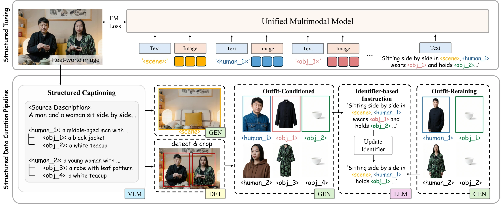
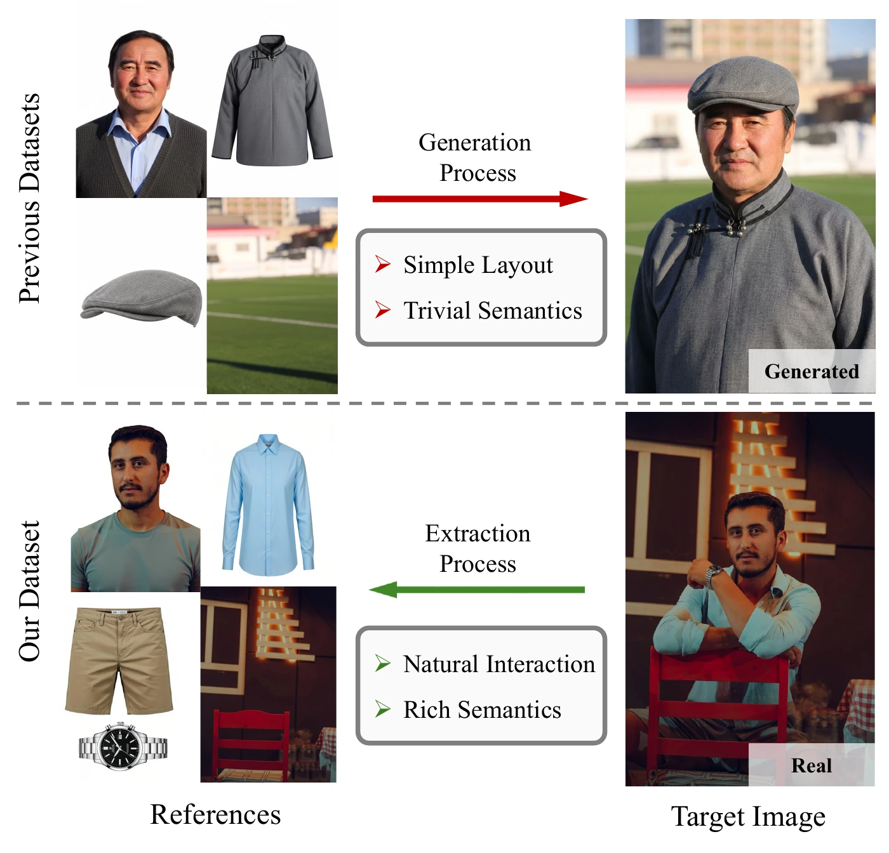
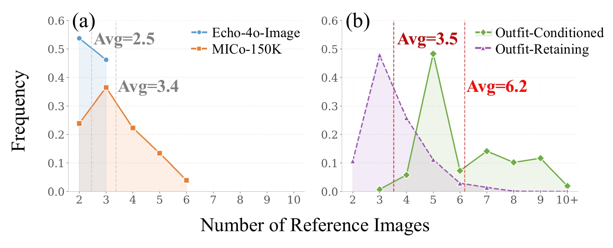
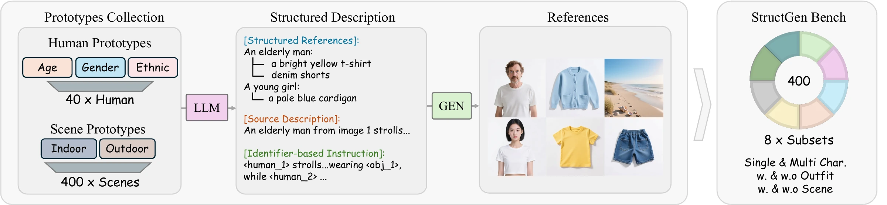
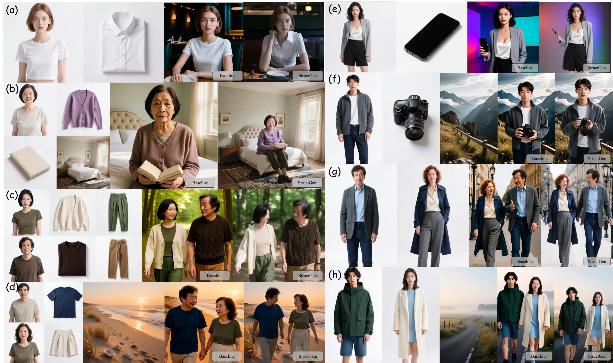
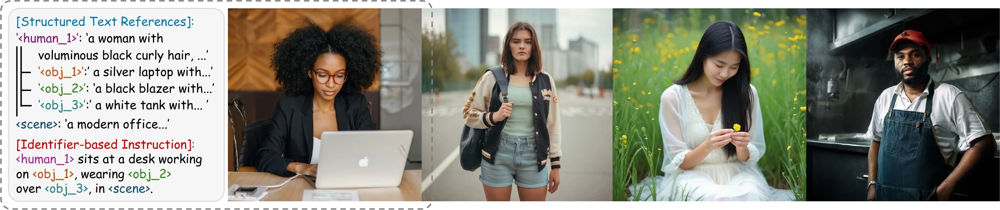

Abstract
Multi-reference image generation aims to synthesize images by integrating attributes from multiple reference images under textual instructions. As the number of references increases, the task necessitates complex semantic comprehension, such as correctly associating attributes with the intended subjects and planing out coherent spatial arrangement between subjects and their environments. Existing approaches, which rely solely on natural language instruction, often fail to capture these complex intentions precisely, leading to semantic misalignment and inconsistent generation. We identify two key factors behind these limitations: natural language instructions are often verbose and ambiguous, and high-quality multi-reference data is scarce. To address these issues, we propose StructGen, which employs a structured, dictionary-like format to encode multiple reference images, thereby enabling explicit and unambiguous specification of generation intentions. To support this design, we construct a structured dataset based on high-quality real images and develop a corresponding training framework, along with a dedicated benchmark for challenging multi-reference scenarios. Extensive experiments on both public benchmarks and our proposed benchmark demonstrate that StructGen consistently outperforms existing methods on both semantic alignment and detailed reference-generation consistency, especially under complex instructions with multiple references.
Structured Context Modeling Framework

StructGen assigns every reference a unique identifier and organizes the references as a dictionary. Identifier-based instructions then point directly to the intended people, belongings, and scenes, turning implicit cross-reference associations into explicit grounding. Alongside this representation, our real-image curation pipeline preserves flexible poses, rich backgrounds, and natural human–environment interactions that are often missing from distillation-based data.
Structured Data Curation Pipeline


StructGen consists of Structured Data Curation and Structured Tuning. The curation pipeline transforms real-world images into synchronized entity references, identifier-grounded descriptions, and generation instructions. During tuning, the model learns this structured context format while preserving the pretrained model’s broader understanding and generation capabilities.
StructGen Bench

StructGen Bench contains 400 cases across 8 subsets, defined by three orthogonal factors: outfit-conditioned versus outfit-retaining generation, single versus multiple humans, and the presence or absence of a scene reference. Each case includes matched natural-language and identifier-based instructions, enabling fair comparison while evaluating prompt following, subject consistency, and facial ID consistency.
Results


Across StructGen Bench, StructGen better preserves referenced objects, scenes, and facial identity than the Echo-4o baseline. It also produces more natural subject–environment interactions and more realistic visual details, including lighting and texture. The gains are most evident in complex multi-human settings, where explicit identifier grounding prevents attributes from being assigned to the wrong subject. StructGen also performs generation when all references are provided as textual descriptions, demonstrating that structured context supports text-to-image synthesis with decoupled entity descriptions and global semantic specification.
Citation
@misc{peng2026structgendisambiguatingmultireferenceimage,
title={StructGen: Disambiguating Multi-Reference Image Generation via Structured Context Modeling},
author={Jianing Peng and Mengyu Wang and Henghui Ding and Zixiang Li and Ting Liu and Xiaochao Qu and Luoqi Liu and Yao Zhao and Yunchao Wei},
year={2026},
eprint={2607.15619},
archivePrefix={arXiv},
primaryClass={cs.CV},
url={https://arxiv.org/abs/2607.15619},
}